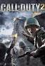

Gierkomania.pl

Opis Gry:
Call of Duty 2 – gra komputerowa z gatunku strzelanek pierwszoosobowych w realiach II wojny światowej, wyprodukowana przez studio Infinity Ward i wydana przez Activision. Jej premiera na komputery osobiste odbyła się 25 października 2005 roku, a na konsolę Xbox 360 – 22 listopada 2005 roku.
